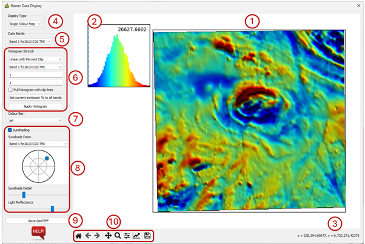
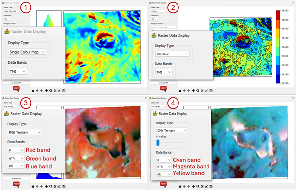
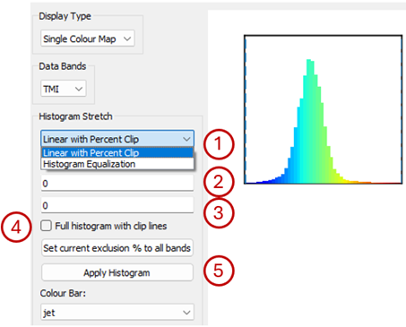
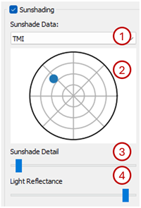
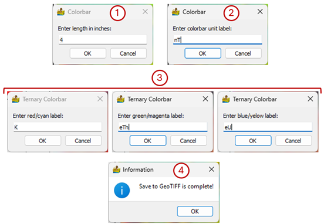

Raster Data Display¶
This allows for the display of raster data in a variety of ways common to most image processing packages. The resultant dataset can then be exported as a GeoTIFF for vector interpretation in a Graphical Information System (GIS) package.
The Raster Data Display interface has the following elements:
Raster display – the raster is displayed using the settings selected on the left of the interface.
Histogram display – a histogram of the data distribution coloured using the selected colour bar. When the mouse pointer hovers over the raster display the data value at the pointer location appears in the top right corner of the histogram display.
Coordinates - when the mouse pointer hovers over the raster display the coordinates of the pointer appears here.
Display Type – the type of data displayed in the raster display. Options are Single Colour Map, Contour, RGB Ternary and CMY Ternary.
Data Bands - the bands to be used in the main display are selected here. When a ternary displayed type is selected the user has the ability to select three bands to display.
Histogram Stretch – settings that determine the type of histogram stretch.
Colour Bar – a dropdown box allows the user to select from a long list of colour bars.
Sunshading - this option applies a sunshade algorithm to the data.
Save GeoTIFF – Once the user is satisfied with the raster display they can save the data to a georeferenced image in GeoTIFF format. Note that this is an RGB image and does not contain actual data values.
Standard image display setting that allows the user to zoom into specific areas of the image, move the zoomed in area around, return to the full image, etc.

Some of the elements will now be discussed in more detail.
Display Type¶
The four Display Types available in this module are:
Single Colour Map - This displays a single band of data by mapping its values to a colour map or colour table. Other packages often refer to it as a pseudo colour map.
Contour - This has the same options as the single colour map but displays the data using contours instead.
RGB Ternary - This option displays three bands, one red, one green and one blue. Because of this, no colour map can be chosen. Three bands must be chosen. Histogram stretch is the same as for previous sections.
CMY Ternary - This option displays three bands, one cyan, one magenta and one yellow. As before, no colour map can be chosen, and three bands must be chosen. Histogram stretch is the same as for previous sections.

Histogram Stretch¶
The preference of how to map the data to the colour bar is chosen here. The options are:
Two histogram stretches are available:
Linear with Percent Clip – the percentage clips determine the percentage of outliers that will be removed from the stretch.
Histogram Equalisation - all colours are assigned the same amount of data samples so that maximum change is seen in the map.
Percentage of low values to exclude when using the Linear with Percent Clip option.
Percentage of high values to exclude when using the Linear with Percent Clip option.
Full histogram with clip lines - this allows the user to see the full histogram, even after percent clipping. The positions of the clip lines are indicated. This option is only applicable when using the Linear with Percent Clip option.
The Apply Histogram button must be clicked for any changes to take effect.

For ternary images, when using the Linear with Percent Clip option the user can specify the lower and upper exclusion limits separately for each band or apply the same limits for all bands by clicking on the Set current exclusion % to all bands.
Sunshading¶
This option applies a sunshade algorithm to the data. The shader used is Blinn’s formula (Horn, 1981). The user can control three aspects of the way the dataset is shaded, namely the sun angle, the level of detail and the light reflectance:
Sunshade data - This is the band to use for sunshading. For a multiband dataset the band can be different from the band used for the colour image.
Sun Angle - This is chosen by clicking on a small circular map. A blue dot denotes the sun’s azimuth and elevation.
Sunshade Detail - Controls how much sunshade detail is present. Move the slider to the left to increase the detail.
Light Reflectance - Controls the light reflectance of the surface. Move the slider to the left to increase the reflectance.

Save GeoTIFF¶
Use this to save your final maps as a GeoTIFF image. This will also save two colour bars (one vertical and one horizontal) or a ternary colour bar. The size of the colour bar relates to how big you wish it to be on the paper map. Note that the GeoTIFF image is an RGB image and does not contain actual data values.
The user is prompted for the following information:
The length of the colour bar in inches.
For a Single Colour Map or Contour map the user must enter the data units. This will appear next to the colour bar.
For an RGB Ternary or CMY Ternary image the user must enter the names that will appear at each colour on the ternary colour bar.
The image as been saved once the Save to GeoTIFF is complete! message appears.
